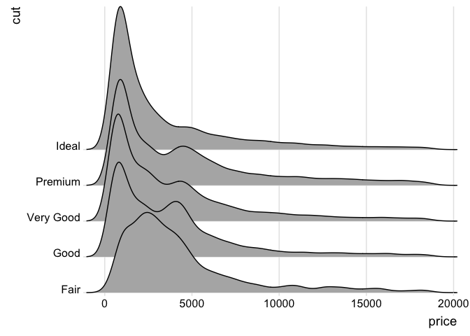

Ridgeline plots are partially overlapping line plots that create the impression of a mountain range. They can be quite useful for visualizing changes in distributions over time or space. These types of plots have also been called “joyplots”, in reference to the iconic cover art for Joy Division’s album Unknown Pleasures. However, given the unfortunate origin of the name Joy Division, the term “joyplot” is now discouraged.
Installation
Please install the stable release from CRAN:
Alternatively, you can install the latest development version from github:
Usage
library(ggplot2)
library(ggridges)
ggplot(diamonds, aes(x = price, y = cut)) +
geom_density_ridges(scale = 4) +
scale_y_discrete(expand = c(0, 0)) + # will generally have to set the `expand` option
scale_x_continuous(expand = c(0, 0)) + # for both axes to remove unneeded padding
coord_cartesian(clip = "off") + # to avoid clipping of the very top of the top ridgeline
theme_ridges()
#> Picking joint bandwidth of 458
Documentation and Examples
First read the package vignette. Then read the reference manual.